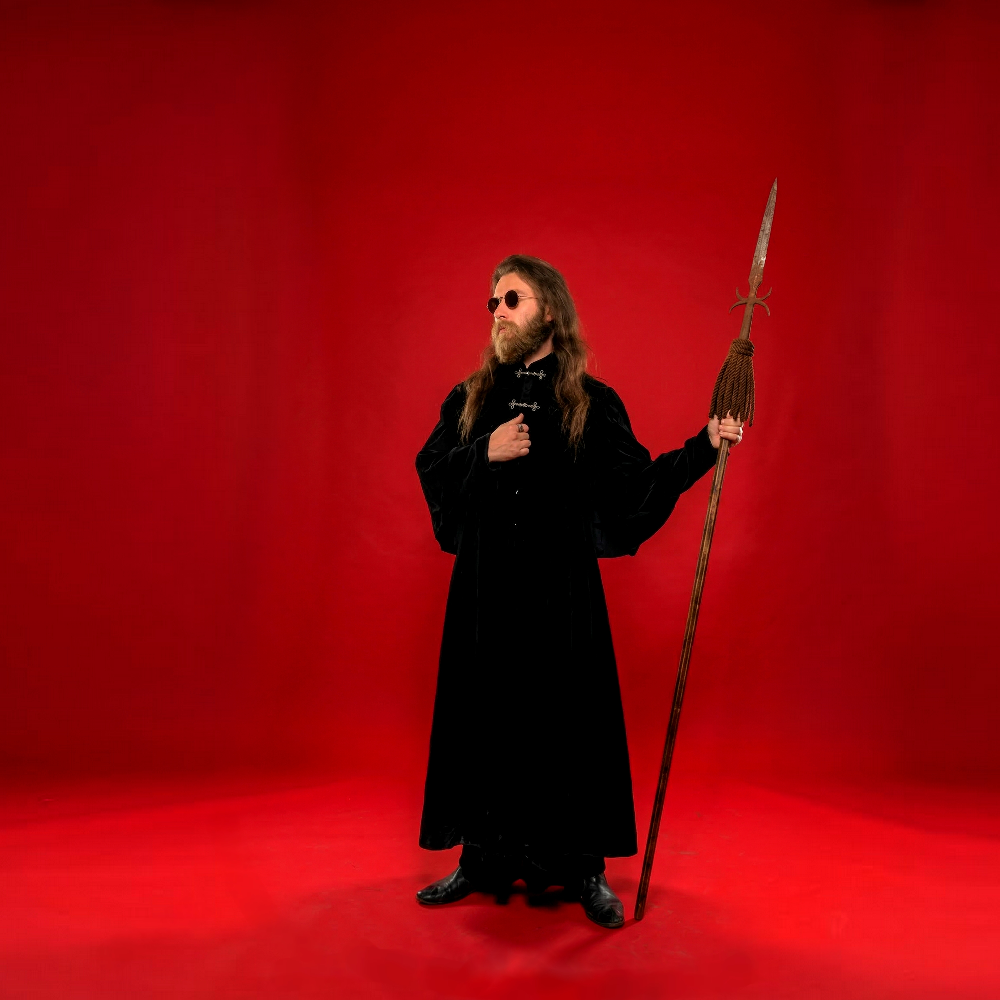
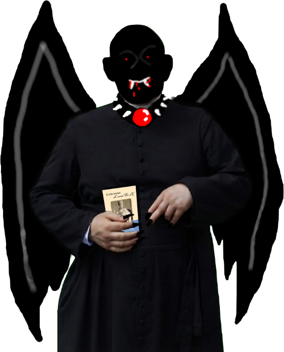
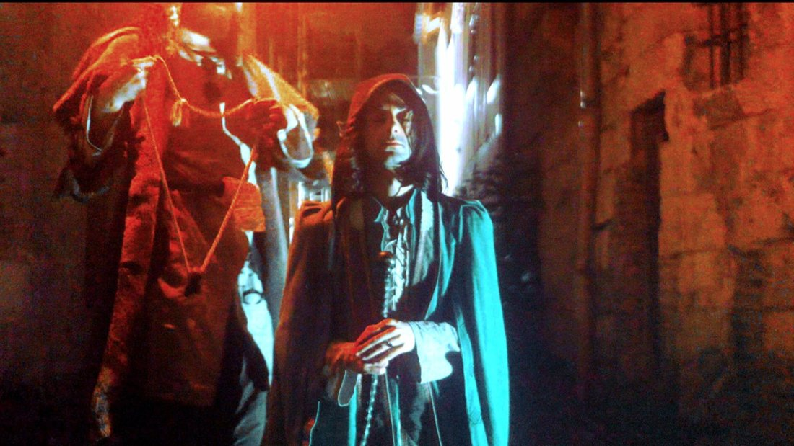
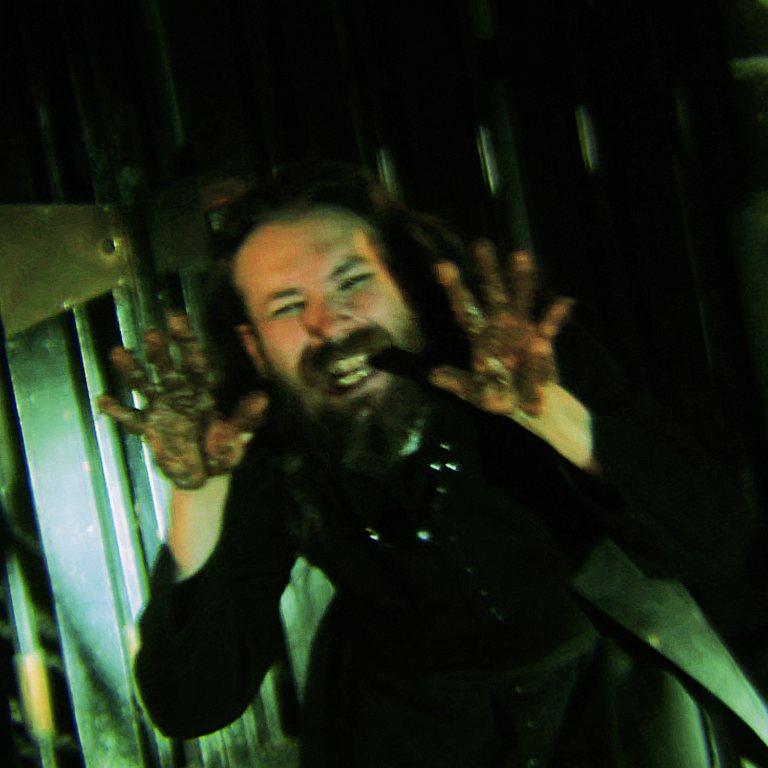
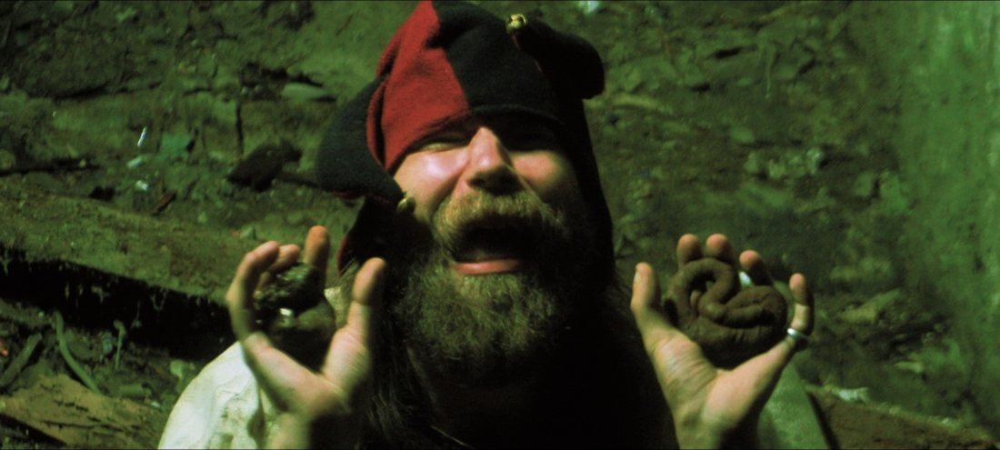

TERRITOIRE
Carte interactive de Rouen et lieux de l'œuvre.


BROUILLON · MODE PUTRIDE · NON PUBLIÉ
La Créature du Marais
L'envers du site : le vitrail pourrit en violet, les contours suintent en vert, et les cinq rubriques propres cèdent la place à celles de la fosse. Discographie, albums et paroles restent présents ; seuls les textes de présentation deviennent des confessions, anecdotes et révélations.
Carte interactive de Rouen et lieux de l'œuvre.
Personnages, figures et incarnations.
Mêmes albums, mêmes titres, mêmes paroles : seuls les textes de présentation changent.
Cabinet de curiosités : objets, costumes et accessoires.
Journal vivant des sorties et des événements artistiques.
Personnages, figures et incarnations de la fosse. Fiches en cours : tout ce qui n'est pas encore confirmé reste marqué « à compléter ».

TANCRÈDE CHARON · CUL-POINTU · ROUEN
Chanteur, compositeur et metteur en scène de ses propres clips, il officie sous la bannière de PUANTEUR PUTRIDE Productions. À la surface, le rouge de la veste côtelée ; ici, la fosse l'a teinté de violet et le fluide vert le ronge de l'intérieur.
Son genre officiel : l'opéra gothique électronique catholique traditionnel, carnavalesque et grotesque, sur un Moyen Âge 2 dont le brun est la couleur de prédilection.

VAMPIRE-PRÊTRE · SOUTANE ET CATÉCHISME
Prêtre de la fosse : soutane noire, ailes de chauve-souris, yeux rouges, crocs, collier à pointes serti d'une gemme rouge. Il serre contre lui un livret, le Catéchisme saint Pie X : le dogme d'un côté, la morsure de l'autre.
Son masque a été exhumé (voir la photo « Découverte du masque d'Éphébus » dans les ustensiles), et il a pour pendant Éphébelle, dont le bonnet est conservé.

COMPAGNON DE LA CRÉATURE · GUEUX
Silhouette encapuchonnée, cape turquoise, col à jabot. C'est l'ami de la Créature, déguisé en gueux dans le clip de Misérables. Son nom rappelle celui de Bataille ; sa cape, elle, ne rappelle rien de sage.
Il reviendra dans le futur clip de Scatholique, extrait d'In Odium Fidei, et n'apparaît donc que dans cette version du site.
Une seule discographie : les albums modernes, puis les Retard-Tinables. Les paroles restent sur la fiche de chaque album. Les nouveautés SoundCloud s'écoutent au clic.

Single à venir · extrait d'In Odium Fidei · durée ???

Single à venir · extrait d'In Odium Fidei · durée ???

À venir · anecdotes à écrire

Anecdotes à écrire

Anecdotes à écrire

Anecdotes à écrire

Anecdotes à écrire

2020 · durée ???
Album perdu : il ne reste que la pochette et quelques reliques d'images, à venir.

2020 · durée ???
Album perdu : il ne reste que la pochette et quelques reliques d'images, à venir.

2019 · 10 titres

2019 · single · 1 titre

2019 · single · 1 titre

2018 · 7 titres

2018 · 9 titres

2018 · 6 titres

2018 · 7 titres

2018 · single · 1 titre

2018 · EP · 2 titres
2018 · single · 1 titre · pochette à retrouver

2017 · single · 1 titre

2017 · 6 titres

2017 · 5 titres

2017 · 12 titres
Proposition : une trappe dans le pied de page du site propre, à côté du © MMXXVI. Un seul geste, sans menu ni réglage. Essaie-la ci-dessous (simulation).
À l'activation : une coulée de slime vert, avec quelques surprises brunes, balaie l'écran de haut en bas, puis les couleurs, l'en-tête et le bandeau basculent. Le choix serait mémorisé (localStorage), et « ↑ Remonter à la surface » ramène au site propre par la coulée inverse.
Notes de brouillon : Territoire = contour officiel de la commune de Rouen. Bestiaire = tête de vampire. Discographie = disque vinyle. Ustensiles = clystère.